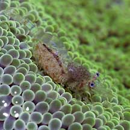
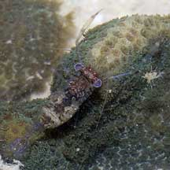

|
|
| shrimps text index | photo index |
| Phylum Arthropoda > Subphylum Crustacea > Class Malacostraca > Order Decapoda > prawns and shrimps > Family Paleomonidae |
| Commensal
shrimps Periclimenes sp.* Family Palaemonidae updated Oct 2016
Where seen? These transparent shrimps are often seen living on other animals such as sea anemones, sea cucumbers, and hard and soft corals. Some are also seen in small groups on the ground and among seaweeds. These shrimps are hard to spot as they are small and transparent; and usually only active at night and when their host is submerged. Features: 1-3cm long. These little shrimps are usually transparent. They are thus sometimes also called glass shrimps. Sometimes, all that can be seen of them are their beady little eyes! At night, the shine from their eyes make them easy to spot. Some have white markings or a fine stripe along the body. Human uses: Unfortunately, these amazing shrimps are popular in the live aquarium trade and thus harvested from wild reefs to supply the trade. Status and threats: Some of our commensal shrimps are listed as 'Vulnerable' on the Red List of threatened animals of Singapore. Llike other creatures of the intertidal zone, they are affected by human activities such as reclamation and pollution. Trampling by careless visitors and over-collection by hobbyists also have an impact on local populations. |
 Five-spot anemone shrimp seen on carpet anemones in pairs. Kusu Island, Jul 04  Tiny carpet anemone shrimp seen on carpet anemones in groups of 5-10. Pulau Sekudus, Jun 05 |
|
 Little red-nose shrimps are also found on living hard and soft corals. St. John's Island, May 06 |

*Species are difficult to positively identify without close examination.
On this website, they are grouped by external features for convenience of display.
| Genus
Periclimenes recorded for Singapore from Wee Y.C. and Peter K. L. Ng. 1994. A First Look at Biodiversity in Singapore. in red are those listed among the threatened animals of Singapore from Davison, G.W. H. and P. K. L. Ng and Ho Hua Chew, 2008. The Singapore Red Data Book: Threatened plants and animals of Singapore ^from WORMS +Other additions (Singapore Biodiversity Record, etc)
|
Links
References
|
|
|